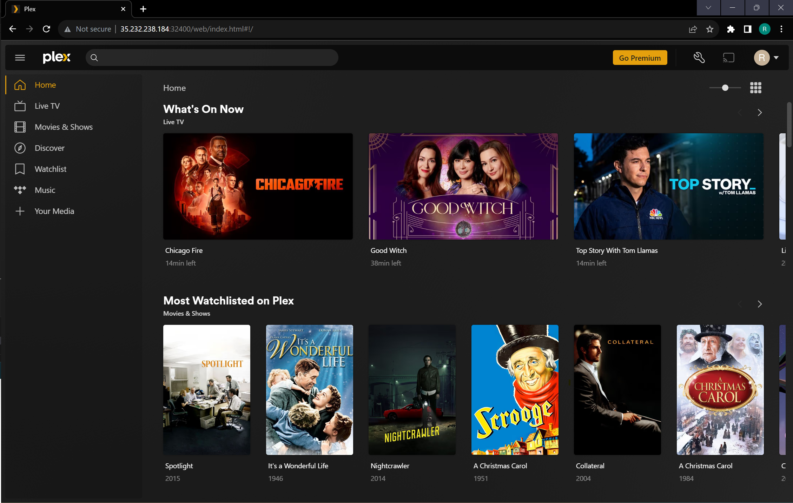

CSI 3660 Plex Server Project
☰
Home
Setup
Project Settings
About
About the Project
What the Plex Server Looks Like Running

Group Members and Their Responsibilities
Robbie Atwood
Configured Plex Server on the VM
Found resources to use as guides for setting up the project
Wrote majority of the overview of the project proposal
Modified presentation design and filled in information on the slides
Wrote information for the website
Wrote the backup script and scheduled it accordingly by putting it in the /etc/cron.daily directory
Wrote README.txt for the backup information
Wrote logging command to monitor the success of the backup
Wrote logging command to log the IP addresses that visited our website
Rachel Anthony
Configured Plex Server on the VM
Found resources to use as guides for setting up the project
Cited sources used for the project in the project proposal
Modified Canva layout design for the presentation
Created the website structure and filled in information on the pages
Wrote the scripts to add movies and series to the directories to have them uploaded to the server
Modified directory structure to create separate folders for plexadmin and plexusers
Wrote logging command in add_movie.sh and add_series.sh to log memory
References
https://di-marco.net/blog/it/2021-01-01-setup_a_linux_plex_media_server/#storing-media
https://linuxize.com/post/how-to-install-plex-media-server-on-ubuntu-20-04/#configuring-plex-media-server
https://www.turbogeek.co.uk/plex-media-server-setup-guide/
https://www.howtogeek.com/252261/how-to-set-up-plex-and-watch-your-movies-on-any-device/
Presentation
Unable to download PDF. Use this
link
instead.